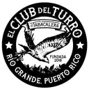

El Club del Turro
Cigar maker (grows, cures, blends and rolls) · Río Grande, Puerto Rico
El Club del Turro appears in La Hoja Boricua, the guide to cigars by Puerto Rican artisans, with 15 cigars in the catalog.
Their cigars
- Pedro Albizu Campos Vitolas: Robusto, Toro · Strength: Mild
- Mamposteao' Vitolas: Robusto 5 x 50 · Strength: Medium
- Cartucho Vitolas: Cartucho 4.25" x 30/60 · Strength: Full
- Deja el Drama Vitolas: Robusto 5 x 50 · Strength: Mild
- LIBERTAD
- El Turrito Vitolas: Petit Corona 4" x 37 · Strength: Mild
- HVA Vitolas: Robusto 5" x 50 · Strength: Mild
- Escopeta Vitolas: Robusto 5" x 50 · Strength: Full
- Lancero Vitolas: Lancero 7" x 38 · Strength: Medium
- Don Pepe Vitolas: Torpedo 7" x 54 · Strength: Medium
- Gallo Pinto Vitolas: Robusto 5" x 50 · Strength: Mild
- Angel David Vitolas: Robusto 5" x 50 · Strength: Mild
- Timber and Blues Vitolas: Robusto 5" x 50 · Strength: Medium
- Naturola Vitolas: Robusto 5" x 50 · Strength: Full
- Dylan's Barber Pole Vitolas: Torpedo 5.5" x 52 · Strength: Full